HTTrack on Android
HTTrack downloads a website to your device so you can read it offline. The
Android app runs the same mirroring engine as the desktop version behind a touch
interface. It needs Android 7.0 or later, and is available on
Google Play.
The steps below follow one mirror from start to finish.
- Grant storage access
On first launch the app asks for permission to store mirrors on your
device. The prompt reads "Allow HTTrack Website Copier to access photos,
media, and files on your device?". Tap ALLOW: without it the app
cannot save the downloaded files.

If you have used an older release, a second prompt offers to bring its
mirrors into the app. Tap Import to move them, or Not now to
skip.

- Start
The welcome screen shows the engine version at the bottom. Tap
Next to create a project, or Browse sites to open a mirror you
already made.

- Name the project
Give the project a name, and optionally a category to group related
mirrors. Base path shows where the files will be written. Tap
Next.

- Enter the address
Type the site address. If a project of the same name already exists,
pick Continue interrupted download or Update existing download.
Tap Options to adjust the crawl, or Start to begin.

- Options (optional)
The Options screen holds the crawl settings, grouped into eleven
tabs. The defaults suit a first mirror, so you can leave the whole screen alone
and tap Start. Every setting is described in the
option reference at the end of this page.

- Run the mirror
HTTrack downloads the site and reports live figures: bytes saved,
links scanned, transfer rate, and errors. Tap Abort to stop early; a
partial mirror can be resumed later.

- Browse the result
When the crawl finishes the app reports Success and the mirror
location. Tap Browse Mirrored Website to read the copy in your browser,
View log to see what happened, or New project to start
again.

- Where the files are
Mirrors are written under /storage/emulated/0/HTTrack/Websites,
in a folder named after the project. That folder lives in your device's shared
storage, so a file manager or a USB connection can reach it. Opening
index.html there browses a mirror without the app.
Option reference
Every setting on the Options screen, tab by tab, in the order the
tabs appear. Anything left empty keeps the engine's default, which is what an
unmodified project uses.
Three things work differently from the desktop version: the proxy tab has
no login and password, the download folder stays inside the app's own storage so
tapping Base path browses within it but cannot leave it, and the MIME table
holds eight rows rather than an unbounded list.
Scan Rules
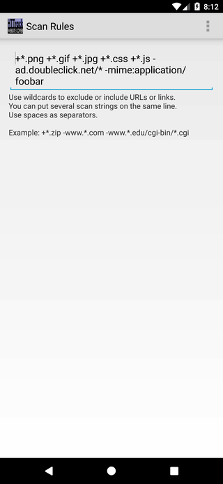
Filters decide which addresses the crawl keeps and which it drops, and
they are the setting most worth learning: a mirror that grabs too much or misses
its images is nearly always a filter problem. Type the rules into the single field,
separated by spaces, as many as you like on one line.
A rule starts with + to accept or - to reject, and
* matches any run of characters. Later rules win over earlier ones, so put
the general rule first and the exception after it. +*.png takes every PNG,
-ad.doubleclick.net/* drops a whole host, and -mime:application/foobar
filters on the type the server reports rather than on the address. The
filter reference covers the full syntax.
Limits
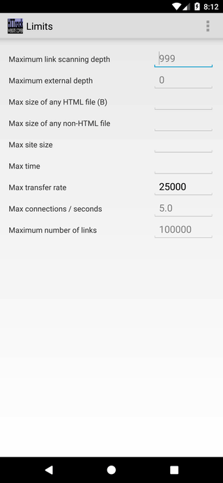
- Maximum link scanning depth: how many clicks from the start pages
the crawl may travel. Empty means no limit, which is safe because the travel
settings still hold the crawl to the site you asked for.
- Maximum external depth: how far to follow links that leave the
site or that the filters rejected. Zero never leaves. This overrides the filters,
so raise it in small steps.
- Max size of any HTML file (B) and Max size of any non-HTML
file: per-file ceilings in bytes. A file above the ceiling is skipped, not
truncated.
- Max site size: total bytes the whole mirror may reach.
- Max time: seconds the mirror may run before it stops.
- Max transfer rate: bytes per second, so HTTrack does not take the
whole connection.
- Max connections / seconds: how often a new connection may be
opened. Fractions work, so 0.1 is one connection every ten seconds. This
is the main courtesy to the server you are copying.
- Maximum number of links: how many addresses the engine tracks at
once. The crawl stops dead when it hits this, and a large value costs
memory.
Flow Control
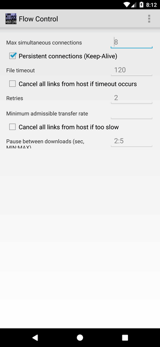
- Max simultaneous connections: parallel transfers. Lower it to one
or two when the files are large or the server is fragile.
- Persistent connections (Keep-Alive): reuse one connection for
several files. Worth keeping on, especially over mobile data, where setting up a
connection costs more than the file.
- File timeout: seconds to wait for a server that has gone
quiet.
- Cancel all links from host if timeout occurs: one timeout
abandons every remaining file on that host. Blunt, and easy to regret on a slow
connection.
- Retries: attempts after a recoverable error. It will not rescue a
404.
- Minimum admissible transfer rate: a transfer slower than this is
given up on.
- Cancel all links from host if too slow: the same blunt rule
applied to slow hosts.
- Pause between downloads (sec, MIN:MAX): wait a random time
between files. 2:5 waits two to five seconds, which keeps a small site
from noticing you at all.
Links
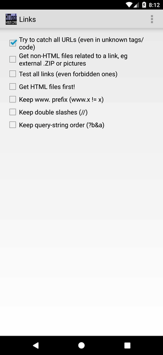
- Try to catch all URLs (even in unknown tags/code): hunt for
addresses inside script and unknown markup. Finds links nothing else will, at the
cost of some requests for things that were never addresses.
- Get non-HTML files related to a link: fetch the images, archives
and other assets a page refers to, including ones hosted
elsewhere.
- Test all links (even forbidden ones): request every link just to
see whether it resolves, and record the failures in the log. Slow, and only useful
when checking a site rather than copying it.
- Get HTML files first!: fetch pages before images, so the shape of
the site is known early.
- Keep www. prefix, Keep double slashes, Keep query-string
order: each switches off one part of the URL-hack normalisation on the
Spider tab. Turn one on only when the site genuinely
serves different content for www.example.com and example.com, for
a doubled slash, or for reordered query parameters.
Build
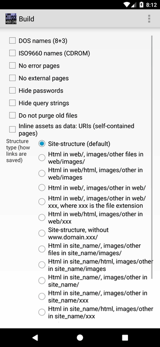
- Structure type (how links are saved): fifteen layouts for the
local copy. The default keeps the site's own folder tree; the others sort files by
kind, or drop the domain from the path.
- DOS names (8+3) and ISO9660 names (CDROM): cut filenames
down for old filesystems and for burning to disc.
- No error pages: skip writing a local page where the server
answered with an error.
- No external pages: replace links that leave the mirror with a page
warning that you need to be online.
- Hide passwords: keep credentials out of the rewritten
links.
- Hide query strings: drop the ?a=b part from local
filenames. Tidier, but two pages that differed only by query string then
collide.
- Do not purge old files: on an update, keep local files that have
disappeared from the site.
- Inline assets as data: URIs (self-contained pages): embed images
and stylesheets inside the HTML, so a page is one file you can send
anywhere.
Browser ID
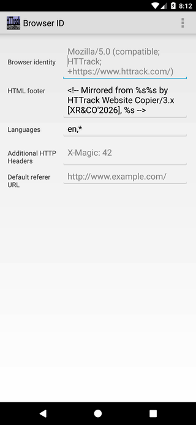
- Browser identity: the User-Agent sent with every request.
Some sites serve different pages, or refuse to answer, depending on
it.
- HTML footer: a comment added to each saved page. The three
%s stand for the host, the file, and the date of the mirror, in that
order.
- Languages: the Accept-Language header, for sites that
serve translations.
- Additional HTTP Headers: one extra header line, written as
Name: value.
- Default referer URL: the Referer sent with requests, for
sites that check where you came from.
Spider
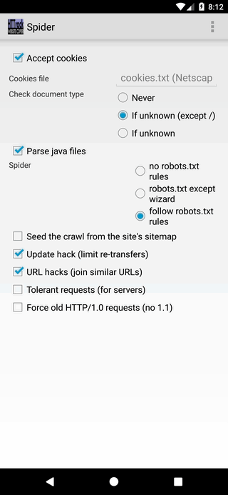
- Accept cookies and Cookies file: keep the session cookies a
site hands out, without which some pages never appear. The file is in the usual
cookies.txt format, so one exported from a browser can be reused
here.
- Check document type: when to ask the server what a URL actually
returns, so that a script producing a GIF is saved with the right extension.
Never is fast and produces a mirror that may not
open.
- Parse java files: look inside scripts for addresses.
- Spider: whether to obey the site's robots.txt. Following
it is the default and the polite choice.
- Seed the crawl from the site's sitemap: read the site's sitemap
for start addresses, which reaches pages nothing links to.
- Update hack (limit re-transfers): on an update, treat a file whose
size has not changed as unchanged. Saves a lot of transfer, and now and then misses
a real edit.
- URL hacks (join similar URLs): treat addresses that differ only
cosmetically as one page, so it is not fetched twice. The three Keep boxes on
the Links tab switch off individual parts.
- Tolerant requests (for servers): accept a wrong length and other
old-server quirks. Can leave files truncated, so it is off by
default.
- Force old HTTP/1.0 requests (no 1.1): a last resort for servers
that mishandle modern requests.
Proxy address
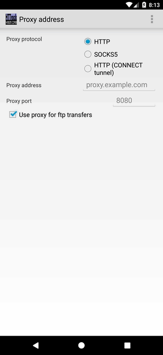
- Proxy protocol: plain HTTP, SOCKS5, or HTTP
(CONNECT tunnel) for a proxy that must tunnel the connection.
- Proxy address and Proxy port: where the proxy
listens.
- Use proxy for ftp transfers: send ftp:// addresses
through the proxy too, which usually works better than the engine's own FTP client
and gets through a firewall.
There is no username and password here. A proxy that demands
authentication cannot be used from the app.
Log, Index, Cache
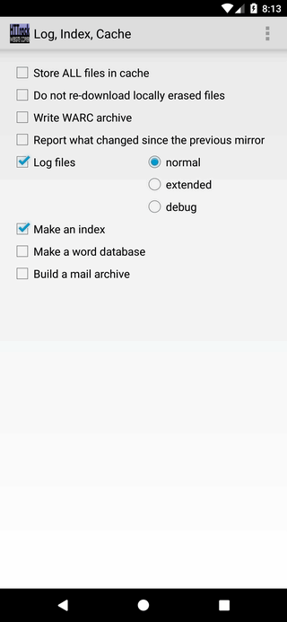
- Store ALL files in cache: keep every file in the update cache, not
just the pages. The cache then grows to roughly the size of the mirror, and in
exchange you can rebuild the site in a different layout without downloading it
again.
- Do not re-download locally erased files: a file you deleted by
hand stays deleted through the next update.
- Write WARC archive: also write the crawl as a standard WARC
archive, the format web archives use, alongside the browsable
copy.
- Report what changed since the previous mirror: write
hts-changes.json listing what this run found new, changed, unchanged and
gone.
- Log files: record what happened, at normal, extended
or debug detail. Leave this on, since it is the only account of what failed
and why.
- Make an index: build the index.html that lists your
mirrored sites.
- Make a word database: write an index.txt of every word
found, for searching or language work.
- Build a mail archive: despite the name, this writes the mirror as
one MIME-encapsulated .mht file.
Type/MIME associations
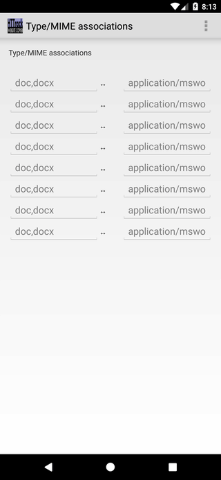
Each row promises the engine that a file extension always carries one MIME
type, so it need not ask the server. Telling it that asp is
text/html spares a request per link and speeds up a large mirror
noticeably. Several extensions can share a row, separated by commas
(asp,php,php3).
The same rows rename files that arrive mislabelled: if you know every
dat on the site is really a ZIP, map it to
application/x-zip.
Experts Only
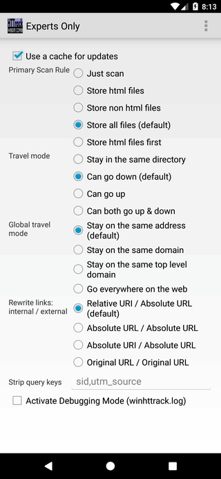
- Use a cache for updates: required to update the mirror or resume
an interrupted one later. Leave it on.
- Primary Scan Rule: what to keep. Just scan saves nothing
and only walks the site; the others store pages, everything but pages, or
both.
- Travel mode: whether the crawl may climb out of the starting
folder. The default goes down into subfolders only.
- Global travel mode: how far it may stray between hosts, from the
one address to anywhere on the web. Beyond the default, set the depth and size
limits first.
- Rewrite links: internal / external: the form the saved links take.
The default gives relative links inside the mirror and absolute ones for the rest,
which is what makes the copy browsable from a folder. Original URL / Original
URL leaves every link exactly as it was.
- Strip query keys: parameter names to ignore when deciding whether
two addresses are the same page. Listing utm_source stops the same page
arriving several times under different tracking links.
- Activate Debugging Mode: extra detail in the log, for working out
why a mirror went wrong.
Back to Home
|